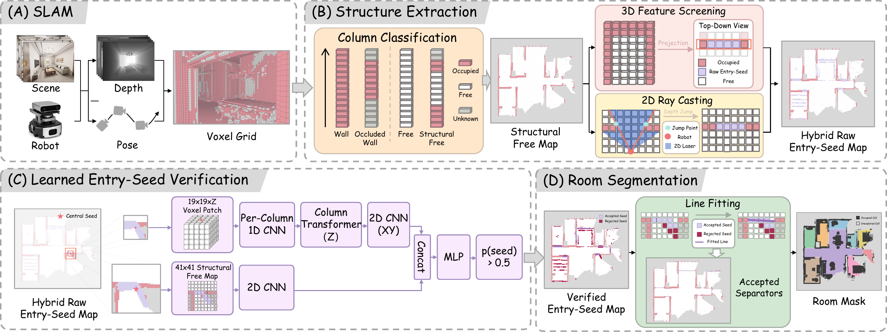

VoxRoom
Room Segmentation from Partial Observations during Robot Exploration
From partial occupancy observations to room masks
VoxRoom combines voxel-column structure, a Structural Free Map, hybrid entry candidates, and a learned 2D/3D verifier. Accepted separators partition the currently observed space; unknown space remains unassigned.

Simulation demonstration
Isaac Sim · InteriorAgent kujiale_0003 · 10× playback
RGB, depth, navigation-space room masks, and the Vertical Free Map. This qualitative recording is not an inference-latency benchmark. Download the original supplied MP4.
Real-world robot demonstration & code
A dedicated real-world recording and deployment-code release will be added here.
PACECAT LDS_M200_E LiDAR, DJI Osmo Action 4 monitoring camera, and a circular differential-drive base. Onboard computer: Intel Core Ultra 9 275HX + NVIDIA GeForce RTX 5070 Laptop GPU.
The README reports maintainer-supplied module timings. The real-robot code entry point is reserved; the existing ZED runtime is a separate implementation. No real-world video or segmentation-quality result is implied by this placeholder.